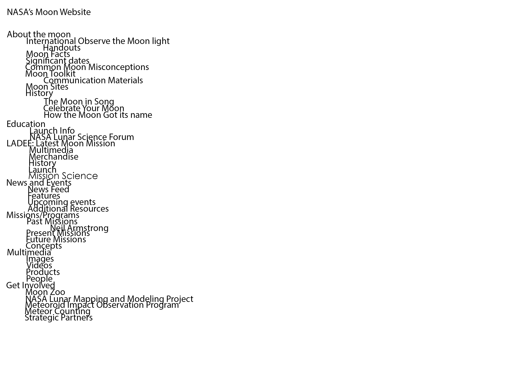
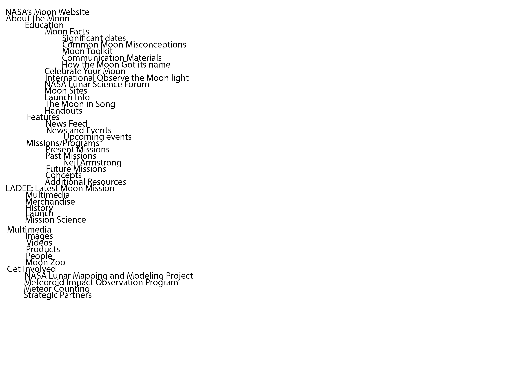
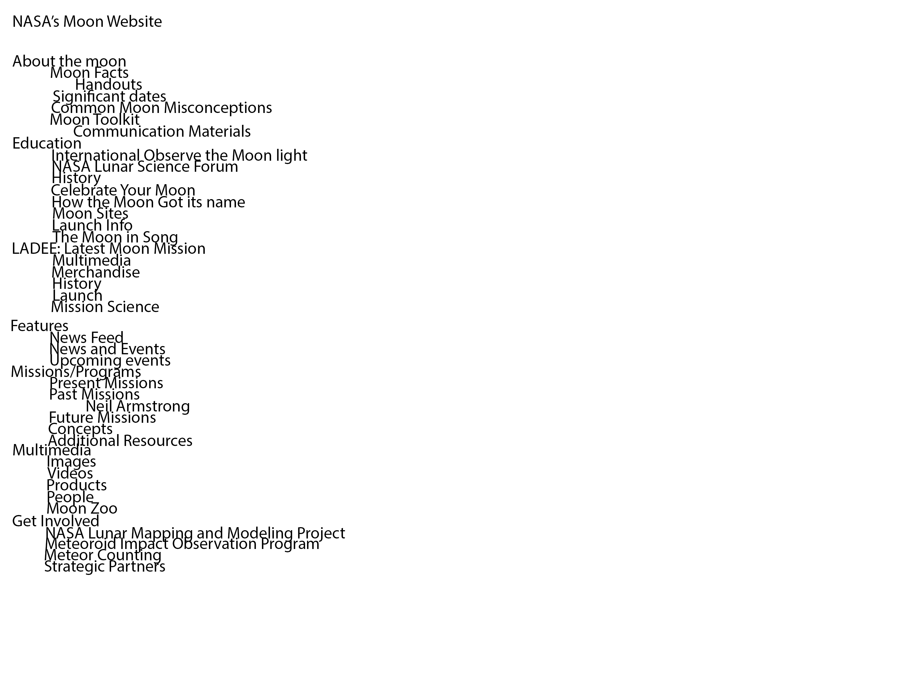
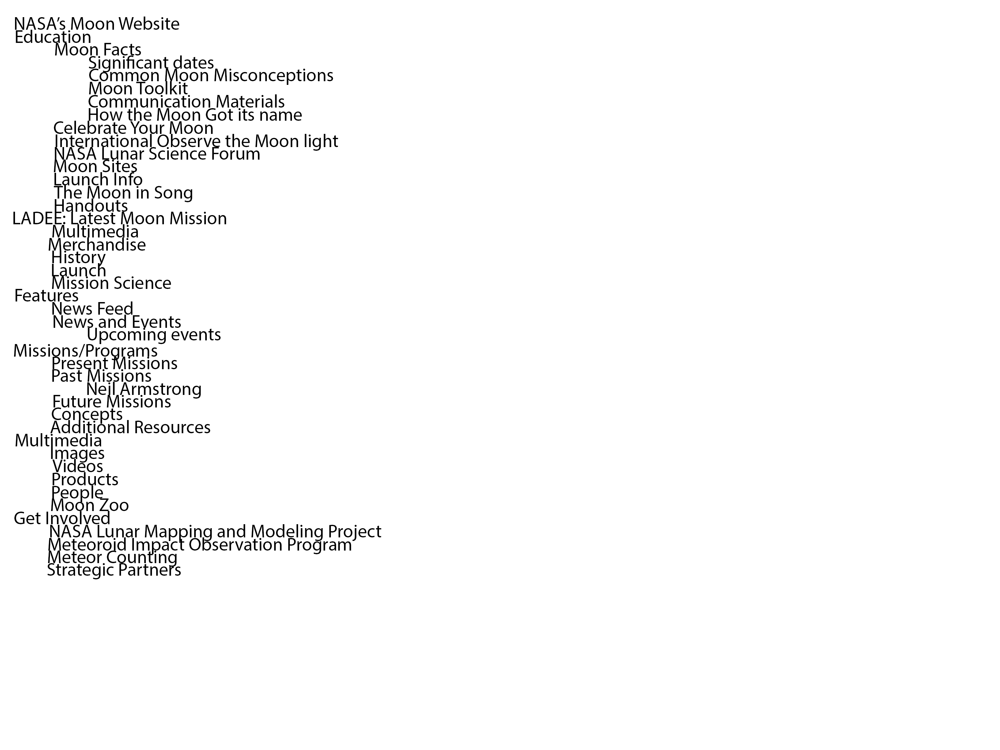

I Started the assignment by writing out all the terms in order and cutting them out and placing them (In the order that i found them in from left to right) on the table. I went first, then left them in that order (Without importance level distinguished and had my mom do it. then my brother, and then my father, in the same method as before. The order that the table was left in, seemed to have a great effect on my brother and father, but not on my mom, (Having the greatest amount of change between steps.
I did the first sorting, i had my mother, brother, and father do it with me.
My mother interestingly tied everything she could to the moon, and education. Major emphasis on Education.
My brother is notoriously lazy, and organized it very similarly to the way i did, applying as little effort as possible in an attempt to make me happy in time.
My Father also focused on the Educational category. But placed marginally more importance on "ladee," "features," "missions," "multimeda," and "get involved."